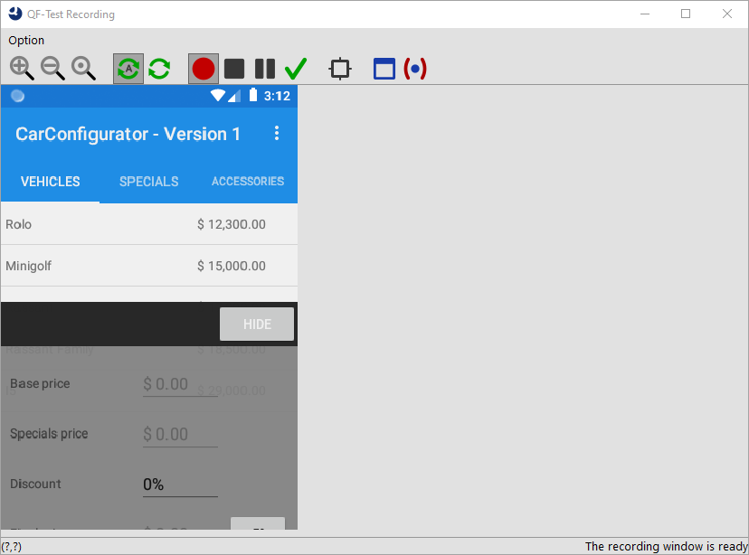
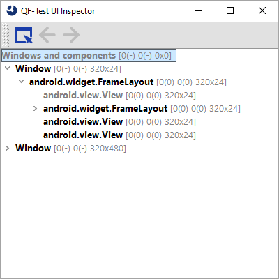

| Version 6.0.3 |
It offers buttons for resizing the content area. Please also note that the content area just shows an image of the device screen. It needs to be updated manually by using the refresh button. There is also an auto refresh toggle button to perform this automatically.
|
|  | ||
|
| Figure 15.19: QF-Test Android recording window | ||
Goodies:
The recording window also has some goodies to mention. In the bottom line left it shows the mouse coordinates, which may become handy if you need to work with absolute mouse clicks. On the right, it indicates the type of the last highlighted component.
There is a toolbar button on the recording window to open a UI inspector window displaying all visible components including the size and coordinates. This is more to help tracking down issues with component recording and recognision issues, but may become handy here and there.
|
|  | ||
|
| Figure 15.20: Android hirarchy spy window | ||
| Last update: 9/6/2022 Copyright © 1999-2022 Quality First Software GmbH |